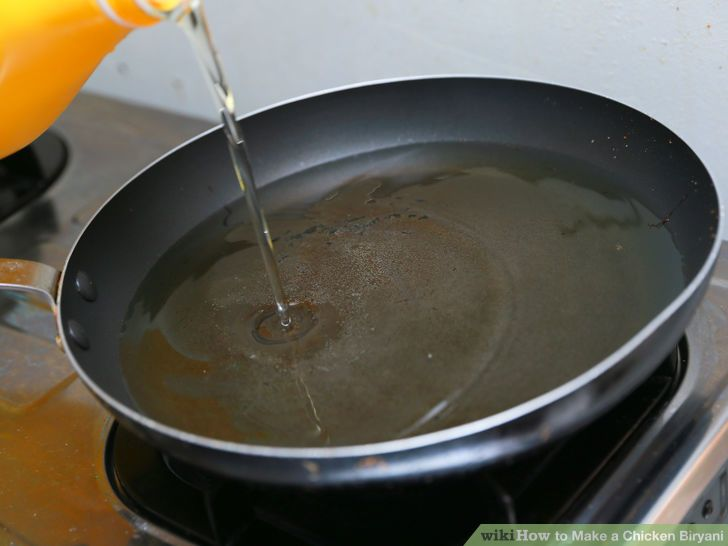
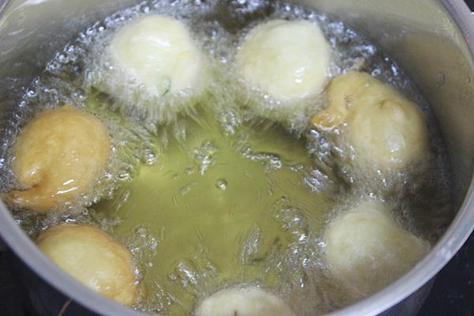
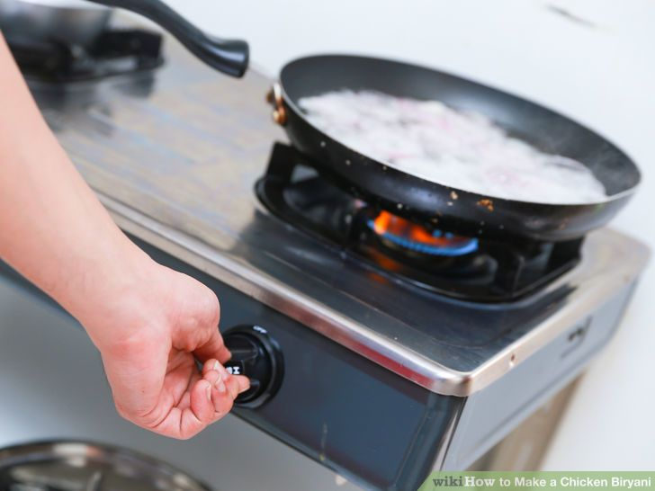

1.Cut beef into cubes, 1 inch x inch x inch. If you cut the beef smaller, it will require less time to cook.
I usually make a big pot with various size of beef cubes
for several meals. So some chunks will be ready soon and some later.

2.Crush garlic. Chop green onions and cilantro. Set them aside for garnish. Put the rest of the ingredients, except for bean sprouts
and ground fresh chili paste, in a large pot and cover the beef with water. Boil for at least 2 hours.
You may need to add water from time to time. I strongly recommend make this dish in advance. The flavors come together better the next day.
You know when it’s ready when the meats break apart easily. The meat and broth has a sheen to it.

3.Make the sauce by diluting the ground fresh chili paste with a tablespoon of vinegar to make the dipping sauce.

4.Cut lettuce into big pieces in a bowl. Add bean sprouts. Pour soup over. Garnish with sliced cilantro and green onion.
Add a teaspoon of fried garlic. Sprinkle white pepper on top. Serve hot with vinegar chili sauce.
| Contact Us | Follow Us |
| Phone Number:09421018986 Email:foodparadise@gamil.com |
Copyright © 2017,Food Paradise. All Rights Reserved.